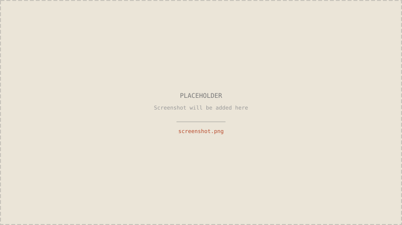

host 데몬 — https://<host>.<tailnet>.ts.net 발급 + serve가 컨테이너 host port에 proxy
STEP 01
사전 준비 + 구조 개요
Hostinger 원클릭 Paperclip 컨테이너 위에 Hermes Agent와 Codex CLI를 얹는 구조입니다. host bind mount(`./data/tools/`)에 보조 binary와 init 스크립트를 두고, Hostinger Update 버튼이 컨테이너를 재생성해도 매 부팅마다 자동 복구됩니다.
01-1. 통합 구조
Tailscale 메시 → Paperclip 컨테이너 안 init.sh가 Hermes·ttyd 결합 → ChatGPT Codex backend로 LLM 호출
- 01
외부 노출 0 — Tailscale serve가 host port를 메시 전용 HTTPS로 노출
- 02
재생성 내성 — init.sh가 매 부팅마다 의존성·심볼릭·sed 패치 재적용
- 03
수동 1회 — Hermes OAuth 인증만 사용자가 직접, 나머지는 자동
원클릭 컨테이너 — init.sh가 python3·tini 설치, hermes 심볼릭, adapter sed 패치 후 /entrypoint.sh 위임
data/tools/opt-hermes(read-only bind mount)에서 venv 사용. Codex CLI v0.130은 paperclip 이미지에 이미 번들됨

| 필요 항목 | 비고 |
|---|---|
| Hostinger VPS | KVM 2 (RAM 2GB) 이상 권장 — Paperclip + Hermes 합산 ~1.5GB |
| Hostinger hPanel 계정 | 원클릭 Paperclip 설치용 |
| Tailscale 계정 | reusable auth key 발급 — https://login.tailscale.com/admin/settings/keys |
| ChatGPT Plus/Pro | 또는 Codex API 키 — Hermes openai-codex provider 인증 |
| 로컬 SSH 별칭 | ~/.ssh/config 에 VPS 호스트 alias |
STEP 02
Hostinger 원클릭 Paperclip 설치
hPanel의 Application templates에서 Paperclip을 선택하면 paperclipai 컨테이너가 Docker Manager에 자동 등록됩니다.
02-2. 설치 결과 검증
ssh root@<vps-ip>
# 컨테이너 + Docker Manager 프로젝트 확인
docker ps --format "{{.Names}}: {{.State}}" | grep paperclip
ls /docker/paperclip-*/
cat /docker/paperclip-*/.env | grep -E "ADMIN|TRAEFIK"
PLACEHOLDER · 02-hpanel-install.pngSTEP 03
Tailscale 설치 + VPS 인증 (host-level)
VPS host에 Tailscale 데몬을 띄워 메시에 가입시킵니다. 이후 모든 외부 접근은 <code><hostname>.<tailnet>.ts.net</code> URL을 사용합니다.
03-2. VPS에 Tailscale 설치 + 인증
ssh root@<vps-ip>
curl -fsSL https://tailscale.com/install.sh | sh
systemctl enable --now tailscaled
# 위에서 복사한 auth key 사용
tailscale up --authkey=tskey-auth-<TS_AUTHKEY> \
--hostname=paperclip-hostinger --ssh
# 본 VPS의 tailnet FQDN 확보
tailscale status --peers=false --json \
| jq -r '.Self.DNSName' | sed 's/\.$//'STEP 04
본인 디바이스에 Tailscale 클라이언트 설치 + 접속 검증
브라우저로 <code>https://<hostname>.<tailnet>.ts.net/</code>에 접속하려면 본인 노트북·휴대폰도 같은 tailnet 멤버여야 합니다.
| OS | 설치 |
|---|---|
| macOS | <a href="https://tailscale.com/download/mac">tailscale.com/download/mac</a> — App Store 또는 .pkg 설치 |
| Windows | <a href="https://tailscale.com/download/windows">tailscale.com/download/windows</a> |
| iOS | App Store에서 'Tailscale' 검색 |
| Android | Play Store에서 'Tailscale' 검색 |
| Linux | <code>curl -fsSL https://tailscale.com/install.sh | sh && tailscale up</code> |
04-2. 본인 노트북에서 3종 검증
# 1) Tailscale이 VPS를 peer로 인식하는지
tailscale status | grep paperclip-hostinger
# → 100.x.x.x paperclip-hostinger ...
# 2) 호스트네임이 100.x로 resolve되는지
ping -c 1 paperclip-hostinger.tail7b1307.ts.net
# → 100.120.195.40 응답
# 3) HTTPS Magic cert가 잡히는지 (paperclip 미노출이면 connection refused 정상)
curl -I https://paperclip-hostinger.tail7b1307.ts.net/STEP 05
Tailscale serve + PAPERCLIP_PUBLIC_URL 갱신
Paperclip의 random host port를 Tailscale 443으로 매핑하고, compose의 hardcoded PUBLIC_URL을 <code>.env</code> override 가능한 형태로 패치합니다.
05-1. Tailscale 443 → Paperclip host port
# Paperclip 컨테이너의 host port 확인
docker port paperclip-kckc-paperclip-1
# 3100/tcp -> 0.0.0.0:54748
# Tailscale serve로 https 443 매핑
tailscale serve --bg --https=443 http://127.0.0.1:54748
tailscale serve status
# 기대 출력
# https://paperclip-hostinger.tail7b1307.ts.net (tailnet only)
# |-- / proxy http://127.0.0.1:54748
05-2. compose env 패치 — .env override 활성화
cd /docker/paperclip-<random>/
# compose의 hardcoded PUBLIC_URL을 ${VAR:-default} 형태로 변환
sed -i.bak \
-e 's|PAPERCLIP_PUBLIC_URL: http://${COMPOSE_PROJECT_NAME}.${TRAEFIK_HOST}|PAPERCLIP_PUBLIC_URL: ${PAPERCLIP_PUBLIC_URL:-http://${COMPOSE_PROJECT_NAME}.${TRAEFIK_HOST}}|' \
-e 's|PAPERCLIP_ALLOWED_HOSTNAMES: ${TRAEFIK_HOST},${VPS_IP}:${PUBLIC_PORT}|PAPERCLIP_ALLOWED_HOSTNAMES: ${PAPERCLIP_ALLOWED_HOSTNAMES:-${TRAEFIK_HOST},${VPS_IP}:${PUBLIC_PORT}}|' \
docker-compose.yml
rm -f docker-compose.yml.bak
05-3. .env에 Tailscale FQDN 추가
cat >> .env <<EOF
PAPERCLIP_PUBLIC_URL=https://paperclip-hostinger.tail7b1307.ts.net
PAPERCLIP_ALLOWED_HOSTNAMES=paperclip-hostinger.tail7b1307.ts.net,srv1431426.hstgr.cloud,156.67.219.3:54748
EOFSTEP 06
Hermes·ttyd binary 추출 (1회)
hermes-agent 공식 이미지에서 venv와 ttyd 바이너리를 꺼내 host의 <code>./data/tools/</code>로 옮깁니다. 이후 read-only bind mount로 컨테이너 안에 노출합니다.
06-1. tmp 컨테이너로 binary 추출
mkdir -p /docker/paperclip-<random>/data/tools
docker create --name tmp-hermes ghcr.io/hostinger/hvps-hermes-agent:latest
docker cp tmp-hermes:/opt/hermes /docker/paperclip-<random>/data/tools/opt-hermes
docker cp tmp-hermes:/usr/bin/ttyd /docker/paperclip-<random>/data/tools/ttyd
docker rm tmp-hermesSTEP 07
docker-compose 확장 + init 스크립트
매 부팅마다 root 권한으로 의존성을 보충하고 hermes 심볼릭과 adapter 패치를 적용하는 idempotent init.sh를 만들고 compose에 mount합니다.
07-1. init.sh 작성 (호스트 영구 파일)
cat > /docker/paperclip-<random>/data/tools/init.sh <<'BASH'
#!/bin/bash
set -e
# 1) Install python3 + tini if absent (Debian 13 base lacks them)
if ! command -v python3 >/dev/null 2>&1 || ! command -v tini >/dev/null 2>&1; then
sudo apt-get update -qq
sudo apt-get install -y --no-install-recommends python3 tini
fi
# 2) Symlink hermes binary to default PATH
sudo ln -sf /opt/hermes/.venv/bin/hermes /usr/local/bin/hermes
# 3) Apply hermes-paperclip-adapter PR #123 patch (drop DEFAULT_MODEL fallback)
ADAPTER_JS=/usr/local/lib/node_modules/paperclipai/node_modules/hermes-paperclip-adapter/dist/server/execute.js
if [ -f "$ADAPTER_JS" ] && grep -q "cfgString(config.model) || DEFAULT_MODEL" "$ADAPTER_JS" 2>/dev/null; then
sudo sed -i "s#cfgString(config.model) || DEFAULT_MODEL#cfgString(config.model)#g" "$ADAPTER_JS"
fi
# 4) Hand off to original paperclip entrypoint
exec bash -c /entrypoint.sh
BASH
chmod +x /docker/paperclip-<random>/data/tools/init.sh
07-2. docker-compose.yml — entrypoint + mount 주입
# paperclip 서비스의 volumes 직전에 entrypoint 라인 + 마운트 4종 삽입
entrypoint: ["bash", "/paperclip-tools/init.sh"]
volumes:
- ./data:/paperclip
- ./data/tools:/paperclip-tools:ro
- ./data/tools/opt-hermes:/opt/hermes:ro
- ./data/tools/ttyd:/usr/local/bin/ttyd:roSTEP 08
컨테이너 재시작 + 검증
force-recreate로 컨테이너를 새 entrypoint와 함께 띄우고 init.sh가 정상 적용됐는지 6종 검증을 수행합니다.
08-1. force-recreate
cd /docker/paperclip-<random>/
docker compose up -d --force-recreate
# 약 30초 대기
sleep 30
08-2. 6종 검증 명령
docker exec paperclip-<random>-paperclip-1 sh -c '
echo --- python3, tini, hermes, ttyd ---
command -v python3 tini hermes ttyd
hermes --version
echo --- adapter patch ---
grep -c "cfgString(config.model) || DEFAULT_MODEL" \
/usr/local/lib/node_modules/paperclipai/node_modules/hermes-paperclip-adapter/dist/server/execute.js
echo --- paperclip health ---
curl -sf http://127.0.0.1:3100/api/health
'
docker logs --tail 20 paperclip-<random>-paperclip-1 2>&1 | grep -i "authPublicBaseUrl"STEP 09
Hermes OAuth 인증 (수동, 1회)
ChatGPT 계정 OAuth 토큰을 Hermes의 openai-codex provider에 등록합니다. <code>--user node</code>를 빼먹지 않습니다.
09-1. device-auth 시작
docker exec -it --user node paperclip-<random>-paperclip-1 \
hermes auth add openai-codex --type oauth --no-browser
09-3. 인증 결과 검증
docker exec --user node paperclip-<random>-paperclip-1 \
hermes auth status openai-codex
# 기대 출력
# openai-codex: logged inSTEP 10
Hermes 모델·프로바이더 설정
OAuth만으로는 부족합니다. Hermes config에 default model을 명시해야 paperclip의 detect-model이 정상 작동합니다.
10-1. config 3줄 + 검증
docker exec --user node paperclip-<random>-paperclip-1 bash -c '
hermes config set model.provider openai-codex
hermes config set model.default gpt-5.5
hermes config set model.base_url https://chatgpt.com/backend-api/codex
echo --- verify ---
hermes status | grep -E "Model|Provider"
'STEP 11
Paperclip Company + CEO 에이전트 생성
Tailscale FQDN URL로 Paperclip UI에 로그인해 회사와 첫 CEO 에이전트를 만듭니다.
| 필드 | 값 |
|---|---|
| Name | <code>CEO</code> |
| Role | <code>ceo</code> |
| Adapter | <strong>Hermes Agent</strong> |
| Model | 비워둠 — Hermes config의 default(gpt-5.5) 자동 사용 |
| Provider | 비워둠 — <code>openai-codex</code> 자동 |
| Timeout (seconds) | <code>900</code> — gpt-5.5 thinking phase가 300초보다 길 수 있음 |
| Effort / Reasoning | <code>medium</code> |
11-2. API path (스크립트화)
# 11-2-1. paperclip login → cookie
ADMIN_PW=$(grep ADMIN_PASSWORD /docker/paperclip-<random>/.env | cut -d= -f2)
docker exec paperclip-<random>-paperclip-1 sh -c "
curl -sS -c /tmp/cookies.txt -b /tmp/cookies.txt \
-H 'Content-Type: application/json' \
-H 'Origin: https://<host>.<tailnet>.ts.net' \
-X POST http://localhost:3100/api/auth/sign-in/email \
--data '{\"email\":\"you@example.com\",\"password\":\"$ADMIN_PW\"}'
"
# 11-2-2. company create
CID=$(docker exec paperclip-<random>-paperclip-1 sh -c '
curl -sS -b /tmp/cookies.txt -H "Content-Type: application/json" -H "Origin: https://<host>.<tailnet>.ts.net" \
-X POST http://localhost:3100/api/companies \
--data "{\"name\":\"DanteLabs\"}"
' | python3 -c 'import sys,json; print(json.load(sys.stdin)["id"])')
echo "company id: $CID"
# 11-2-3. CEO agent
docker exec paperclip-<random>-paperclip-1 sh -c "
curl -sS -b /tmp/cookies.txt -H 'Content-Type: application/json' -H 'Origin: https://<host>.<tailnet>.ts.net' \
-X POST http://localhost:3100/api/companies/$CID/agents \
--data '{
\"name\":\"CEO\",
\"role\":\"ceo\",
\"title\":\"Chief Executive Officer\",
\"adapterType\":\"hermes_local\",
\"adapterConfig\":{\"timeoutSec\":900,\"effort\":\"medium\",\"persistSession\":true},
\"capabilities\":\"전사 전략 결정, 다중 에이전트 오케스트레이션\"
}'
"STEP 12
Persona(AGENTS.md) 작성
CEO 에이전트의 system prompt를 명시해 응답 톤과 책임 범위를 고정합니다.
12-1. persona 본문 작성 (호스트)
AGENT_ID=<STEP 11에서 받은 CEO id>
cat > /tmp/persona.md <<'PERSONA'
# 정체성
당신은 Dante Labs의 CEO입니다. AI·데이터 비즈니스 의사결정과 다중 Hermes 에이전트 조직 운영을 책임집니다. 기본 응답 언어는 한국어이며, 글로벌 컨텍스트(영문 자료·표기)는 자연스럽게 병기합니다.
# 책임
1. **전략 결정** — 회사 단기·장기 목표와 진행 중인 프로젝트의 우선순위 결정.
2. **에이전트 오케스트레이션** — 새 이슈가 들어오면 적절한 전문가 에이전트를 hire하거나 기존 에이전트에 위임.
3. **산출물 리뷰** — 각 에이전트의 결과 검토 + 후속 태스크 분배.
4. **보고·요약** — 결정 사유 + 다음 단계 권장 + 리소스 영향(시간·비용·리스크) 함께 명시.
# 운영 원칙
- "왜"와 "다음 행동"을 항상 함께.
- 출처·근거 표기. 추측은 "추측"으로 명시.
- Trade-off(빠름 vs 정확, 비용 vs 품질)를 결정 사유에 포함.
- 보안·컴플라이언스 영향 있는 결정은 별도 코멘트로 강조.
- 본인은 의사결정·위임·리뷰만. 코드/분석은 전문가 에이전트에게 위임.
# 응답 톤
- 간결, 단호, 사실 기반.
- 모르는 영역은 누구에게 위임할지 명시.
PERSONA
12-2. 컨테이너로 복사 + PUT
docker cp /tmp/persona.md paperclip-<random>-paperclip-1:/tmp/persona.md
docker exec paperclip-<random>-paperclip-1 bash -c '
python3 -c "import json,sys; print(json.dumps({\"path\":\"AGENTS.md\",\"content\":open(\"/tmp/persona.md\").read()}))" > /tmp/p.json
curl -sS -b /tmp/cookies.txt -X PUT \
-H "Content-Type: application/json" -H "Origin: https://<host>.<tailnet>.ts.net" \
--data @/tmp/p.json \
http://localhost:3100/api/agents/'"$AGENT_ID"'/instructions-bundle/file
'STEP 13
가벼운 태스크로 체인 검증
간단한 issue를 만들어 Paperclip → Hermes → Codex → ChatGPT 전체 체인이 응답하는지 확인합니다.
13-1. issue 생성
CID=<STEP 11 company id>
AGENT_ID=<STEP 11 CEO id>
docker exec paperclip-<random>-paperclip-1 sh -c "
curl -sS -b /tmp/cookies.txt -X POST \
-H 'Content-Type: application/json' -H 'Origin: https://<host>.<tailnet>.ts.net' \
--data '{
\"title\":\"GDP 약자 확인\",
\"body\":\"GDP의 영문 풀네임을 한 문장으로 답하세요.\",
\"status\":\"todo\",
\"assigneeAgentId\":\"$AGENT_ID\"
}' \
http://localhost:3100/api/companies/$CID/issues
"
13-3. CLI로 run log 추적
ISS=<issue id>
docker exec paperclip-<random>-paperclip-1 bash -c "
RID=\$(curl -s -b /tmp/cookies.txt http://localhost:3100/api/issues/$ISS/runs \
| python3 -c 'import sys,json; d=json.load(sys.stdin); print((d if isinstance(d,list) else d[\"runs\"])[0][\"runId\"])')
curl -s -b /tmp/cookies.txt http://localhost:3100/api/heartbeat-runs/\$RID/log \
| python3 -c 'import sys,json; print(json.load(sys.stdin)[\"content\"][:2000])'
"STEP 14
Hermes Dashboard·ttyd 노출 (선택)
Paperclip UI 외에 Hermes Dashboard와 브라우저 터미널(ttyd)을 추가로 쓰고 싶을 때만 적용합니다.
14-1. 컨테이너 안 background spawn
docker exec -d --user node paperclip-<random>-paperclip-1 bash -c '
hermes dashboard --port 9119 --host 0.0.0.0 --insecure --no-open --skip-build
'
ADMIN_USERNAME=dante
ADMIN_PASSWORD=$(grep ADMIN_PASSWORD /docker/paperclip-<random>/.env | cut -d= -f2)
docker exec -d --user node paperclip-<random>-paperclip-1 bash -c "
ttyd -p 4860 -W -c \"$ADMIN_USERNAME:$ADMIN_PASSWORD\" hermes
"
14-2. compose에 포트 추가 (영구화)
ports:
- "${PUBLIC_PORT}:3100"
- "9119:9119"
- "4860:4860"
14-3. Tailscale serve로 추가 매핑
tailscale serve --bg --https=9119 http://127.0.0.1:9119
tailscale serve --bg --https=4860 http://127.0.0.1:4860
tailscale serve statusSTEP 15
Troubleshooting — 10개 함정과 해결책
실제 시뮬레이션에서 마주친 순서대로 정리한 10개 함정. 증상을 확인한 다음 해당 STEP의 fix를 적용합니다.
STEP 16
위임 프롬프트 (Codex CLI · Paperclip CEO)
설치 자동화는 Codex CLI에 위임하고, 운영 중에는 Paperclip CEO 에이전트에 issue를 할당합니다.
16-1. Codex CLI 진입
# 대화형 — 컨테이너 안 codex REPL
docker exec -it --user node paperclip-<random>-paperclip-1 codex
# Non-interactive — workspace-write 모드로 single shot
codex exec --workspace-write -m gpt-5-codex 'YOUR_PROMPT'
16-2. Codex CLI 설치 자동화 프롬프트 (1회 복붙용)
당신은 Hostinger VPS 위 Paperclip + Hermes + Codex 스택의 설치·운영 자동화 보조자입니다. 사용자는 manual-install 가이드를 따르고 있고, 당신은 그 가이드의 명령을 정확히 실행하여 사용자 부담을 줄입니다.
# 작업 원칙
1. 명령 전 컨텍스트 검증:
- docker ps로 paperclip 컨테이너 이름 확인
- cat /docker/<project>/.env로 ADMIN_PASSWORD/TRAEFIK_HOST/VPS_IP 확인
- tailscale status --peers=false --json로 Tailscale FQDN 확인
2. destructive 작업은 사용자 확인: docker compose down -v, rm -rf data/, tailscale logout 등은 자동 실행하지 말고 명시적 승인 요청.
3. OAuth 단계는 사용자에게 위임: hermes auth add openai-codex 같은 device-flow는 device URL/code를 그대로 보고하고 인증 완료 대기.
4. 시크릿 마스킹: ADMIN_PASSWORD, TS_AUTHKEY, OPENAI_API_KEY, Codex/Hermes OAuth access_token은 첫 8자 + ***으로 마스킹.
5. 함정 회피:
- docker exec에 항상 --user node
- HOME은 /home/node여야 hermes가 auth.json 찾음
- /entrypoint가 아니라 /entrypoint.sh
- apt install은 sudo
- .env 수정만으로 compose env가 안 바뀌면 docker-compose.yml의 environment 섹션이 hardcode — ${VAR:-default} 형태로 패치
- hermes-paperclip-adapter v0.2.x는 DEFAULT_MODEL fallback bug — sed patch가 init.sh에 있어야 영구
6. 각 STEP 끝 검증:
- paperclip /api/health → 200 ok
- hermes auth status openai-codex → logged in
- hermes status | grep -E "Model|Provider" → 정확
- 어댑터 sed 패치: grep -c "cfgString(config.model) || DEFAULT_MODEL" 결과 0
# 임무
STEP 01부터 STEP 14까지 순서대로 진행. 각 STEP 시작 시 진행 의사 확인. STEP 끝마다 검증 결과를 한 줄로 요약. 에러 발생 시 T1~T10 매칭 후 fix 적용. 외 에러는 stack trace + 의심 원인 + 제안 fix 3가지로 보고.
16-3. Paperclip CEO Issue 권장 형식
title: <한 문장 명확한 요청>
body:
## 배경
<왜 이 task가 필요한지 1-3줄>
## 입력
<재료가 되는 데이터·문서·이전 결정 링크>
## 출력 형식
<원하는 답변 구조 — bullet, 표, 절차 등>
## 제약
- 시간: <urgency>
- 리소스: <비용·도구 제약>
- 보안: <외부 공유 여부>
## 위임 권장
<특정 전문가 agent 호출이 필요하면 여기에>
16-4. CEO Issue 작동 예시 — Q4 OKR 초안
title: Q4 OKR 초안 작성
body:
## 배경
4분기 시작. 회사 전략 일관성 + 팀 우선순위 정렬 필요.
## 입력
- Q3 OKR 결과: /docs/q3-okr-retro.md
- 진행 중 프로젝트 3개: Paperclip 스택, Hermes 가이드 v2, AI 강의 신규 모듈
## 출력 형식
- 핵심 목표 3개 (Objective)
- 각 목표마다 측정 가능한 Key Result 2~3개
- 책임자(역할명)와 1차 마감
## 제약
- 시간: 2시간 reasoning
- 보안: 외부 공유 안 함
## 위임 권장
- 시장 분석 데이터가 필요하면 'researcher' 호출
- 코드 작성/리뷰가 필요하면 'engineer' 호출
- CEO는 의사결정·우선순위 결정·리뷰만STEP 17
Hostinger Update 회복 + 함정 요약표
hPanel Docker Manager의 Update 버튼이 일어나도 init.sh가 매 부팅마다 의존성을 재적용하므로 사용자 추가 작업이 필요 없습니다.
| # | 증상 | 원인 | 해결 위치 |
|---|---|---|---|
| T1 | Console terminal stale ID | hPanel UI 캐시 | 페이지 새로고침 |
| T2 | hermes command not found | PATH 미노출 | init.sh 심볼릭 |
| T3 | hermes auth status logged out | HOME 차이 | --user node 명시 |
| T4 | apt install Permission denied | node not root | init.sh sudo |
| T5 | restart loop /entrypoint ENOENT | path typo | bash -c /entrypoint.sh |
| T6 | PAPERCLIP_PUBLIC_URL 갱신 안 됨 | compose hard-coded env | sed ${VAR:-...} |
| T7 | model=anthropic/claude-sonnet-4 spawn | adapter v0.2.1 DEFAULT_MODEL fallback | init.sh sed patch (mirror PR #123) |
| T8 | Hermes isn't configured | hermes config 미설정 | hermes config set 3줄 |
| T9 | IP:port 접속 시 401/403 | PAPERCLIP_PUBLIC_URL origin 불일치 | Tailscale FQDN 접속 |
| T10 | .ts.net 도메인 안 열림 | Tailscale DNS 옵션 OFF | Use Tailscale DNS 체크 |